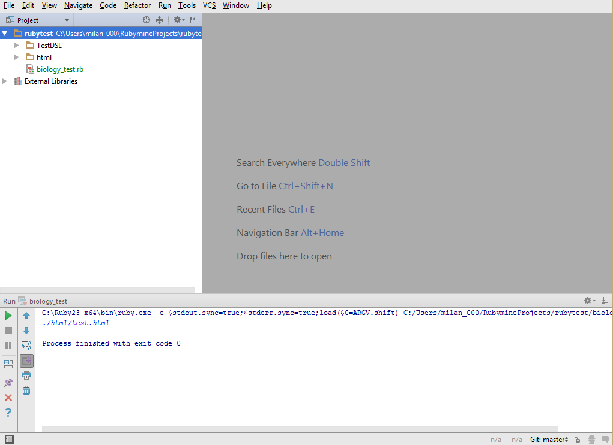
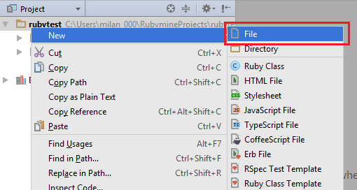
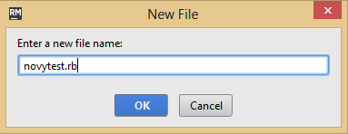
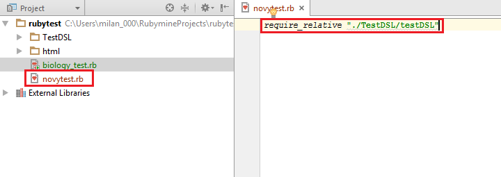

Vytvorenie prvého testu
Najzákladnejším krokom je vytvorenie prvej vety v jazyku Test-it!, ktorá ti umožní vytvoriť svoj prvý test.
Spustenie prostredia
Pracovať budeš s prostredím (editorom) RubyMine. Spusti ho dvojklikom na odkaz na ploche. Po otvorení sa ti ukáže okno ako je znázornené na nasledujúcom obrázku. V ňom ťa budú zaujímať najmä plocha vľavo hore, ktorá ma nadpis "Project", plocha dole "Output", a napokon najväčšia plocha vpravo hore. Do okna Project budeš v rámci projektu rubytest vytvárať nové súbory s definíciou testov, dole v okne Output sa budú vypisovať chybové hlášky (len ak niečo pokazíš), a napokon v tom najväčšom priestore sa ti otvorí súbor pre zápis testu.
{kind=link}
Nový test
Nový test vytvoríš nasledovným postupom:
- Pravý klik nad projektom rubytest v okne Project (vľavo hore)
- V menu, ktoré sa zobrazí, vyber New/Other 
- V okne, ktoré sa zobrazí, napíš názov nového súboru (všetko malými písmenami) a daj mu príponu .rb (viď obrázok), Enterom alebo tlačidlom OK potvrď vytvorenie súboru 
{kind=link}
{kind=link}
Po splnení týchto krokov sa ti v hlavnom pohľade otvorí nový súbor (všimni si, že v okienku Project vznikol nový súbor s názvom novytest a príponou .rb). Na prvý riadok tohto súboru napíš príkaz require_relative za ktorým v úvodzovkách uveď text "./TestDSL/testDSL". Toto je základ, ktorý potrebuješ pre definovanie testu.
{kind=link}
V ďalšej časti sa pozrieme na to, čo vieš v jazyku písať.